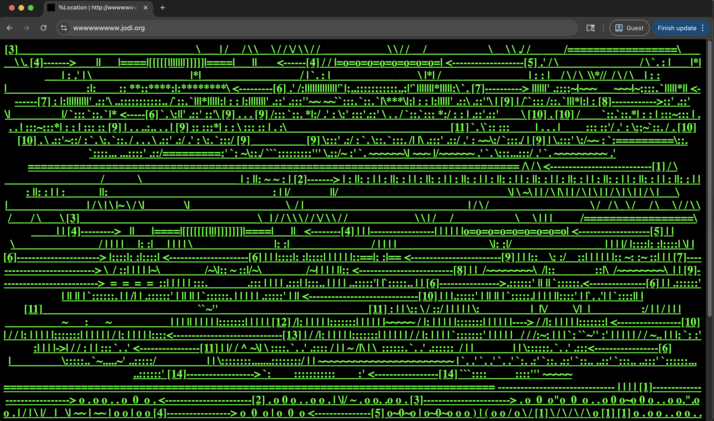

jodi.org — 1995–present
JODI (Joan Heemskerk & Dirk Paesmans)
A foundational work of net art that uses HTML and browser code as visual material. The “broken” look is intentional, turning the act of browsing into an unpredictable mess.
Beautiful Errors highlights the beauty in technological failure. These failures are embraced, when codes crash and systems unravel, and turned into artistic digital works. The way net-artists are able to utilize these mishaps into a form of expression, depicting humanity’s flaws, must be appreciated and that is done so in Beautiful Errors. They highlight the humanity in technology, deconstructing sites into chaos, creating games from system overloads, and just pure visual confusion. They reject the modern standard of perfection, with the rapidly evolving uprising of artificial intelligence, becoming more and more flawless. These artists challenge new views, embracing the flaws and humanity of the web and the creators behind sites.